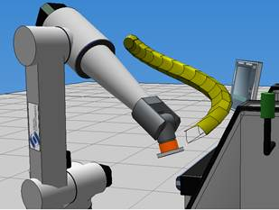
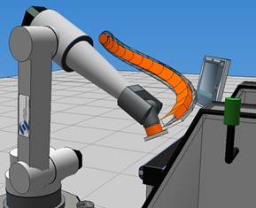
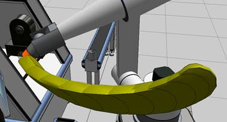
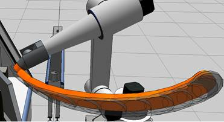

vcSweptVolume is a layout item used to measure and simulate volume displacement of moving objects and detect collisions.
Inherits: vcLayoutItem
A swept volume requires at least two vcNode objects: one designated as the object being swept (InputNodeList) and one designated as the container of swept geometry (TargetNode). In all cases, the target container should remain static and not move during a simulation.
When an object is swept, it is transformed into one or more convex hulls upon movement, an iterative process ensures, and then the swept volume from convex hulls is rendered in 3D world. Swept geometry can be cleared from 3D world or stored in target container, thereby allowing you to save generated swept geometry in a component or layout.
Contents Hide
| Name | Type | Access | Description |
| Decomposition | Integer | RW | Defines the number of convex hulls created for included nodes, for example one conveyor hull encompassing all nodes or several convex hulls based on geometry of each node.
0 1 2 See Decomposition Modes for more information. |
| DecompositionDecimationTarget | Integer | W | If Decomposition set to 1, sets the number of triangle sets remaining after decimation process of input nodes with fewer triangle sets than decimation target, thereby allowing you to expedite/speed up the process.
Set to zero to have no effect. |
| DecompositionQuality | Real | W | If Decomposition set to 1, sets the quality of decomposition in range 0 to 100, thereby affecting the approximation of convex hulls to the shape of input node geometry.
A higher value produces better approximation and convex-shaped triangle sets at the cost of increasing a component's data count and simulation performance. |
| InputNodeList | List of 3-tuple (vcNode, Enumeration inclusion, Enumeration scope) | RW | Defines which nodes will be swept during a simulation.
The value type is similar to Nodes property of a vcNodeList object in which a given node and its scope is either included or excluded from swept volume. |
| Method | Integer | W | Sets the method used for generating convex hulls as swept geometry, for example hollow or filled convex hulls.
0 1 2 Note: Each method type has about the same performance level. See Swept Generation for more information. |
| TargetNode | vcNode | W | Sets the node used for containing swept geometry, which should be static and not move during simulation. |
| Name | Return Type | Parameters | Description |
| begin | None | [vcVector vector] | Starts swept volume process, thereby initiating decomposition.
An optional vector argument can be given to define a frame of reference or center point in input node. If not, process uses center point of input node bound box. |
| clear | None | None | Removes all swept geometry of layout item from 3D world. |
| end | None | None | Stops swept volume process.
After swept volume process has ended, you can perform capping of swept geometry. |
| next | None | [vcVector vector] | Executes an iterative process that renders swept geometry based on positions of input nodes. That is, you should call this method each time you want to render swept volume in 3D world during swept process.
An optional vector argument can be given to define a frame of reference or center point in input node as it moves during a simulation. If not, process uses center point of input node bound box. Generally, this is used to offset swept geometry. |
| store | vcFeature | None | Stores swept geometry in TargetNode, thereby allowing you to save swept geometry in component and/or layout.
Returns the Geometry feature where swept volume is stored in TargetNode. The naming convention for feature is VC_SweptVolumeResult, and the feature is an immediate child of TargetNode root feature. If no swept geometry is generated during simulation, returns None. Generally, you should call store() method after calling end() method and before clear() method. |
Example. Decomposition and Method results
Decomposition = 0 | Method = 0 (lofting)

Decomposition = 1 | Method = 0 (lofting)

Decomposition = 0 | Method = 1

Decomposition = 1 | Method = 1

Example. Basic implementation of swept volume
| from vcScript import* #create swept volume object app = getApplication() sv = app.findLayoutItem('swept') if sv == None: sv = app.createLayoutItem(VC_LAYOUTITEM_IT_SWEPTVOLUME) sv.Name = 'swept' #setup nodes to include/exclude in node list and scope comp = getComponent() nodes = comp.findNode('Enter Node Name') sv.InputNodeList = [( nodes, VC_NODELIST_INCLUDE, VC_NODELIST_NODE )] #define if decomposition is done and what method to sweep sv.Decomposition = 1 sv.Method = 1 #define container of swept volume geometry (must be static/not move) sv.TargetNode = getNode() #define when to begin, update and end swept volume during simulation def OnRun(): sv.begin() while True: sv.next() delay(0.05) #how often the swept volume is updated affects visualization of node's location def OnStop(): sv.end() #remove swept volume as needed #remember generated swept volume is parented to target node def OnReset(): sv.clear() |
Example. Generate swept volume for robot and gripper
| #The following code should be inserted as an Python Script of the component where the #swept volume is stored from vcScript import* app = getApplication() comp = getComponent() sim = getSimulation() finalized = False sweptdefinition = None def OnFinalize(): global follownode, boundcenter, sweptdefinition, finalized, sweptnode if finalized: return # Change the name of the node according to your model follownode = app.findComponent("Press Gripper") boundcenter = follownode.BoundCenter # You may also want to change the name of the layout item. # Keep it specific in case you have multiple items sweptdefinition = app.findLayoutItem("PressGripperSweptDefintion") if(sweptdefinition): app.deleteLayoutItem(sweptdefinition) sweptdefinition = app.createLayoutItem(VC_LAYOUTITEM_IT_SWEPTVOLUME) sweptdefinition.Name = "PressGripperSweptDefintion" # The following includes the node only sweptdefinition.InputNodeList =\ [(follownode,VC_NODELIST_INCLUDE,VC_NODELIST_NODE)] # Create a node in component to consist of the swept volume only. # This is handy when defining collision queues sweptnode = comp.findNode('Swept') if not sweptnode: sweptnode = comp.createNode(VC_NODE,'Swept') sweptdefinition.TargetNode = sweptnode # This is the fastest combination of method and decomposition # to generate swept volume sweptdefinition.method = VC_SWEPT_HULL_FROM_HULLS sweptdefinition.decomposition = VC_CONVEXHULL finalized = True def OnReset(): global sweptdefinition if sweptdefinition: # Tell the Swept Definition to clear all recording sweptdefinition.clear() def OnStart(): global sweptdefinition, finalized, follownode, boundcenter OnFinalize() # Tell the Swept Definition to start recording sweptdefinition.begin(follownode.WorldPositionMatrix * boundcenter) def OnSimulationUpdate(time): global sweptdefinition, finalized, follownode, boundcenter if finalized and sim.IsRunning: # Tell the Swept Definition to record one step sweptdefinition.next(follownode.WorldPositionMatrix * boundcenter) def OnStop(): global sweptdefinition if sweptdefinition: # Tell the Swept Definition to stop recording sweptdefinition.end() |